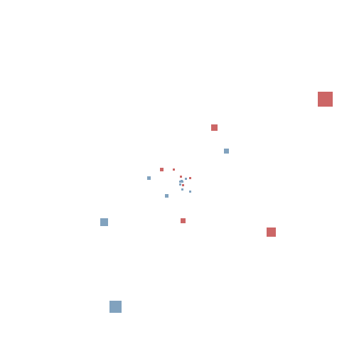

The Fibonacci sequence 1, 1, 2, 3, 5 ... is famously defined by the recurrence
Fn = Fn-1 + Fn-2.
Above is a polar plot of (Fn, Fn), zoomed out by a factor of 232.
The Fibonacci numbers are so sparse that even at this zoom level, the plot contains only 60 terms.

The closely related Lucas sequence 2, 1, 3, 4, 7, ... obeys the same recurrence relation,
Ln = Ln-1 + Ln-2.
Above is a polar plot of (Fn, Fn) in red
interlaced with (Ln, Ln)
in blue, zoomed out by a factor of 264.
This plot contains just over 100 terms of each sequence.